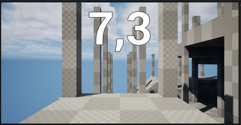

Description of project
This prototype was made by me and a friend. I was the designated Designer/Programmer while my friend was the artist. The purpose of this project was mostly to learn the basics of Unreal Engine and for me to try a new programming language (Blueprints).
System: Timer

Why this mechanic exists
- Represents the player's "health".
- Punishes indecisiveness and...
- ...Pressures the player to make quick decisions.
How it works
- Counts down in seconds from a predetermined number.
- Time can be added by pickups.
- Becomes red when getting close to 0.
- Game Over when reaching 0.
Expected outcome
- Player uses an "Act first, think later" behavior to finish levels.
System: Candy pickups
Why this mechanic exists
- To allow a timer to be shorter than the time to complete the level
and...
- ...Give the player a way to prevent a Game Over which in turn...
- ...Contributes to more complexity in choices that the player can make.
How it works
- Adds time to the timer when picked up.
- Player picks it up by moving into it.
- Multiple pickups are spread among the level.
- Pickups can be dropped by defeating enemies.
Expected outcome
- The player makes decisions based upon whether they should be prioritizing
speed or safety in a given scenario.
System: Enemy Behavior

Why this mechanic exists
- Be a moving obstacle.
- To reward the player who manages to defeat it.
How it works
- Moves towards the player when in their sight range.
- When colliding with the player:
- Knocks player up and back
- Player momentarily loses control of character.
- Knockback is put on a cooldown.
- Drops a pickup when defeated by the player.
Expected outcome
- Increased perceived challenge.
- Player decides if they want to defeat the enemy for the pickup or
avoid them entirely.
- A more dynamic gameplay experience.
System: Attacking

Why this mechanic exists
- To defeat enemies.
- Provide more options for the player in decision-making when playing.
How it works
- The player presses the attack button.
- After a brief moment, raycast forwards from the center of the screen.
- If an enemy is hit, deal damage.
- If enemy is defeated, ragdoll and knock them back.
Expected outcome
- Player feels like they have more agency by being able to remove obstacles.
System: Slide & Crouch

Why this mechanic exists
- Provide the player with more freedom in movement.
- Open up more possibilities for level design.
How it works
- The player presses the crouch button.
- Their height gets reduced to half but can still move at a slower pace.
- If the player is sprinting, it first becomes a slide.
- Slide speed is decided by how steep the ground is.
- Sliding down will increase the speed, while sliding up does the opposite.
- Slide ends by returning to the crouch state.
Expected outcome
- The player feels like they have more opportunities for skill expression.
Overall Level Design
Expected experience
- The player feels immersed in the world of an indoor playground.
- The player feels like they have more than one way to traverse the level.
- The player doesn't always feel restrained.
- The player can make use of all of their movement abilities.
Features
- Ball pits → Slow down the player if fallen into.
- Net walls → The player can see future parts of the level, feels more open.
- "Slip N' Slide" → Immersion feel and obvious use of slide if wanted.
- Verticality → Level feels less flat.
- Open and Restrained parts → Perceived player tension and relief.
Design Goal
While the focus of the project was learning the engine and its programming language, I still had some
goals for the design of the prototype.
The Problem
- Games like Post Void & Mullet MadJack are too often relying on claustrophobia in their level design
to infuse player tension.
- The same games also combine health and a timer into the same entity.
The Objective
- Introduce a different take on the genre.
The Approach
- Make use of a more open level design, compared to other games in the genre.
- Use other methods for punishing the player rather than directly reducing health/time.
Lessons learned
- A grasp of the basics of Blueprints.
- While Unreal Engine supports 2D games, it's far better adapted to 3D.
- A reduction in scope of the project would have been appropriate.